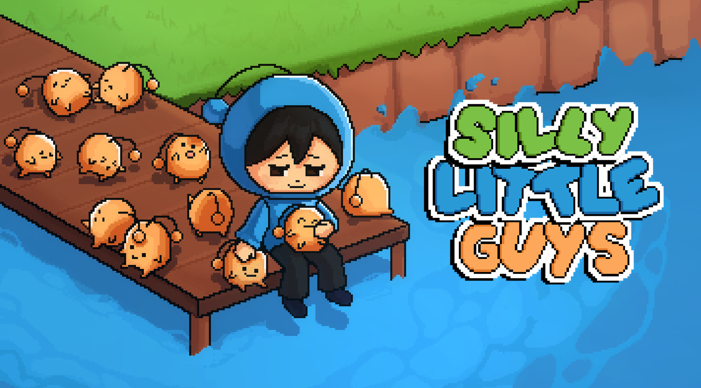
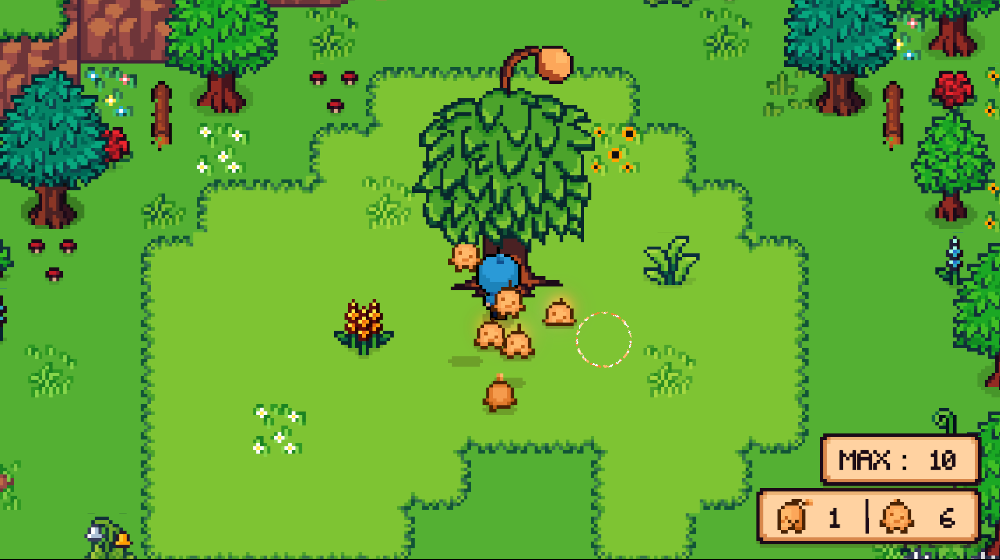
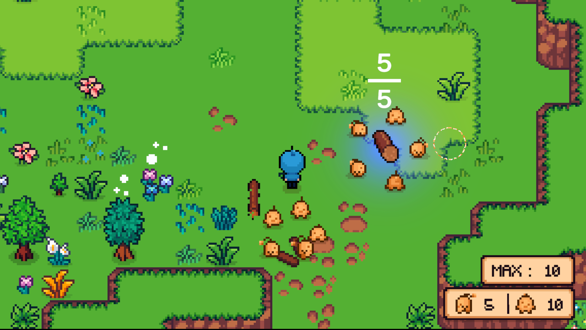
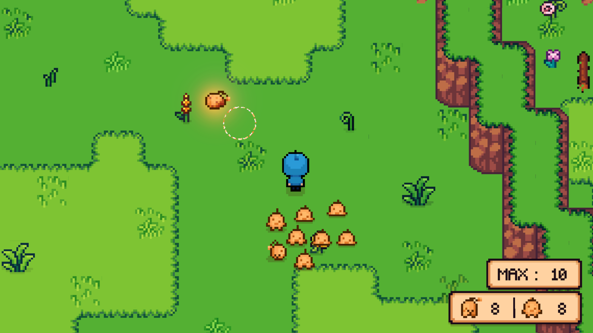
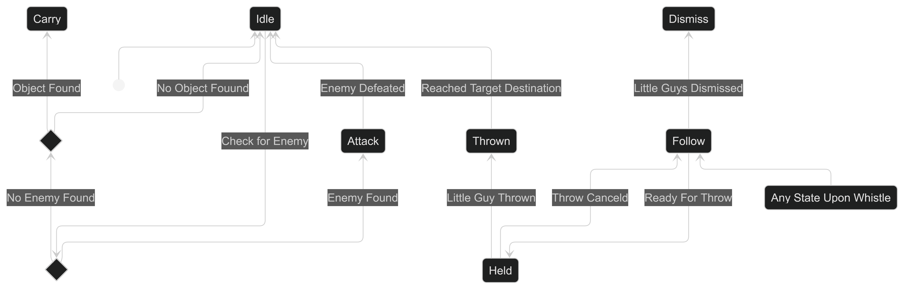
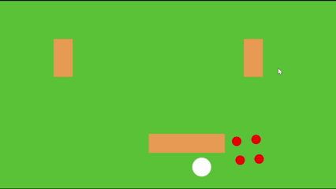
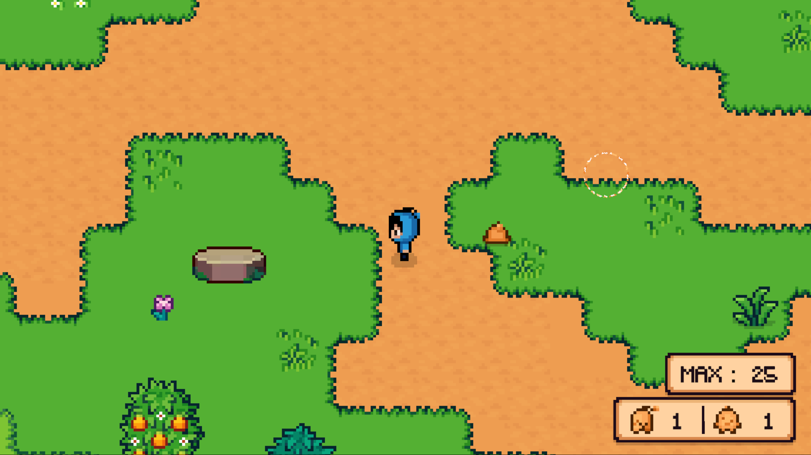
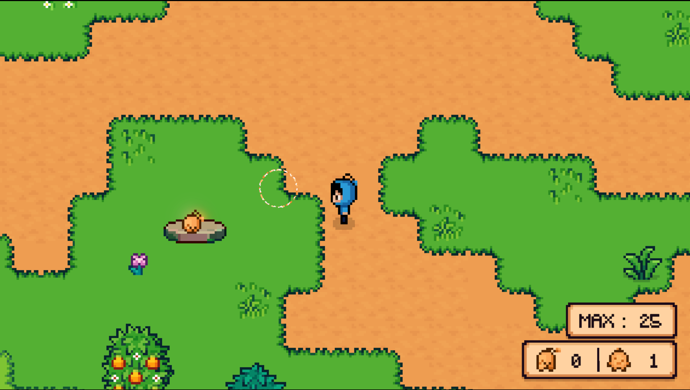
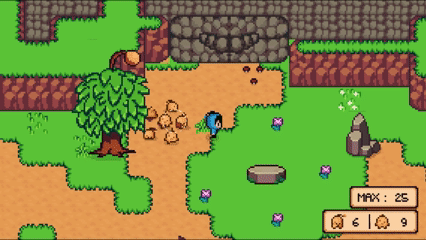

Silly Little Guys
Silly Little Guys is a 2D action-adventure RTS created in the Unity game engine. Players take command of small creatures called Silly Little Guys to solve puzzles, fight enemies, and collect parts to build a boat in order to escape the island they are stranded on.
Project Overview
- Role: Gameplay Designer and Programmer
- Engine: Unity
- Team Size: Four, two artist students and two programmer students
- Genre: 2D Action-Adventure RTS
- Pitch: Exiled to a strange island for your debts, you befriend little creatures to escape and return home for revenge
My Contributions
- Silly Little Guys behaviour, pathfinding, and design
- Story and narrative
- Level design
- Puzzle design
Design Breakdown
Silly Little Guys
In a game where the number of ways the player can interact with the world is minimal, the Silly Little Guys are your doorway to interacting with the world. Silly Little Guys can be commanded to do a variety of tasks such as: attacking enemies, carrying objects, taking down walls, and solving puzzles simply by throwing them at the problem.
Design Goals
Create a creature that players could command to fight enemies, complete puzzles, and interact with the environment in ways the player character cannot.
Inspiration
The idea for the Silly Little Guys and the game as a whole was heavily inspired by the Nintendo series Pikmin as well as other similar games like Tinykin and The Wild at Heart. I grew up playing RTS games and this variation of the genre particularly grabbed my attention. In this variation the perspective shifts from a bird eye view to the perspective of the player character. This results in a feeling of acting as a general on the front lines rather than a god seeing everything once. This perspective gives the player a limited view of the world and adds to the challenges they must face.
With the exception of The Wild at Heart, games of this genre are always 3D. I have always wanted to try adapting the genre to a 2D setting and figure out how the various mechanics that rely on the game being 3D could be translated to the 2D environment.
System Design
Players spawn Silly Little Guys by shaking trees located throughout the level.

Silly Little Guys can be thrown at enemies, puzzles, and boat parts to complete tasks.

Increase Silly Little Guy limit by collecting special orange pick ups!

Implementation
To navigate around the map the Silly Little Guys use Unity's nav mesh system modified using this GitHub Repo to allow for nav mesh use with tilemaps. When it comes to how they function and make choices the Silly Little Guys use a state machine. Their states and how they operate are as follows:
- Idle: Stand still and look for nearby enemies or items to carry. If an enemy or item is nearby change to attack or carry state respectively.
- Follow: Follow the player by constantly moving to their assigned spot in the following group behind the player.
- Held: Disable nav agent and collisions and set position to held position next to player character. Upon throw button release change to thrown state.
- Thrown: Move along path to target. Path is simulated to appear three-dimensional in a two-dimensional environment. Upon reaching target change to idle state.
- Dismiss: Move to nearby spot with respect to player and change to idle state.
- Attack: If enemy is close enough change animation to look at enemy and attack. If enemy is not close enough move towards enemy. If enemy is defeated change to idle. If Silly Little Guy defeated play death animation.
- Carry: Move to spot located around object. Adjust animation to always have Silly Little Guys face the object.

Iteration of Silly Little Guy Following
Initially, the Silly Little Guys would simply move towards a point behind the player when following. This caused them to push each other and overall look very unorganized.

In the final version, each Silly Little Guys is assigned a specific spot in the formation behind the player. This creates a more ordered and cohesive group when moving around.

Button Puzzle
The button puzzles requires players to carefully observe their environment to pick up on subtle clues and use the Silly Little Guys to press the button in the correct order to unlock the boss fight. This puzzle gets players to think more critically about a problem instead of simply just throwing the Silly Little Guys at something and hoping for the best.
Design Goals
The button puzzle appears before the boss arena. The puzzle is designed to test the players ability to observe their environment and and interact with objects with the Silly Little Guys.
Inspiration
The puzzle was inspired by puzzles found in Pikmin and Tinykin. Puzzles in these games rely on players identifying hints in their surroundings and using their units to solve it.
System Design
Buttons start in an unpressed state

Buttons are pressed when either the player or a Silly Little Guy stands on them.

If the buttons are activated in the correct sequence, the boss arena door opens.

Iteration
Initial playtests revealed that players more often than not did not notice when buttons were pressed or not and had trouble determining the correct order to press them in.
To improve clarity, additional visual animations and sound effects were added to clearly show the state of the button. In addition, the areas around the buttons were cleaned up to make the environmental hints stand out more.
Implementation
The buttons themselves are a simple collision trigger that once a player or Silly Little Guy enters the state of the button will change to a pressed state and the button is added to the pressed order list. Upon exiting the area the button will be unpressed and be removed from the list.
To check the players solution the pressed list is compared to the solution list. If the lists are identical, taking order into account, the puzzle is solved and the door is told to open.
Post Mortem
What Went Well
This project went very well. As a team we made a complete game with a beginning, middle, and end. We have an opening and ending cutscene, while there are a few bugs none are game breaking, and overall at the end of the day everyone you played it had fun. Beyond game related aspects, the team worked well together. All of our personalites meshed together, communication was easy, and we had fun working together.
Challenges
Overall the project went smoothly, but did have two challenges to overcome.
The first came from using GitHub for game development with more than one person. I had experience before with using GitHub for a team project but I had yet to experience working on a project with binary assets. For non programmers, binary assets are files whose changes GitHub cannot properly handle when merging. These are files such as scenes or prefabs. So over the course of development we had multiple merge conflicts that were, to be it nicely, annoying to fix. To fix these merge conflicts we would have to compare the files causing the conflicts and decide which was more important and delete the other.
The next challenge was due to the team being over ambitious. As a team we kept on coming up with new ideas that we thought would make our game the best game ever. However, we often got distracted by these ideas and were left scrambling near the deadline trying to complete the base features we needed because we had worked on the shiny new ideas first instead. This could have been handled better by creating an if time allows list that could be revisted once the base features and mechanics were implemented.
What I Learned
Looking back I think the biggest take away from this project is to focus on completing the base features first. Coming up with new mechanics and features is great but they should be put on the if time allows list. This way you at least have a game and are not scrambling trying to just get a working game completed like we were. Pushing the limit is always a good way to strive for a better game, but could come at the cost of having a functional product.
Future Improvements
If development of Silly Little Guys were to be continued there are a few areas I would like to improve upon. The first area is fixing the small bugs that as one of the developers I know where they are but players may not notice. Secondly, is refining the tutorial for how to play the game. In watching people play the game I noticed some players forgot the mechanics or just did not read instructions and thus needed extra verbal explanations on how to play. Thridly, I would like to add more feedback to the button puzzle and make the environmental hints clearer. The final improvement would be to the Silly Little Guys. I would really like to spend some time developing a better navigation system for them.